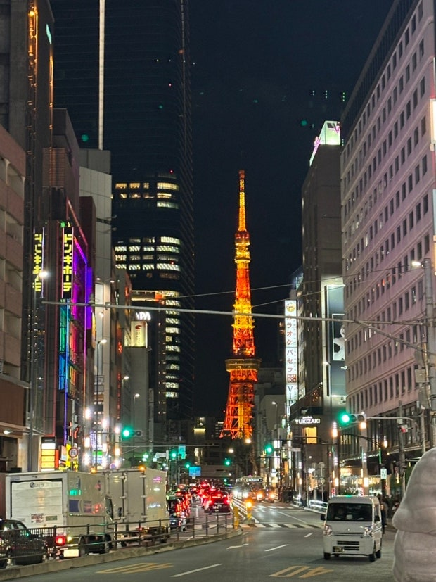
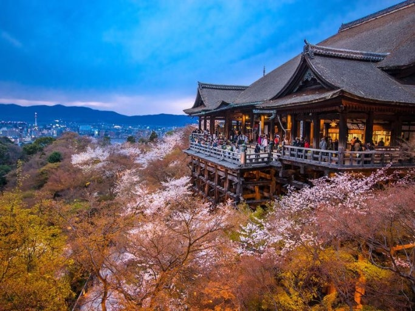
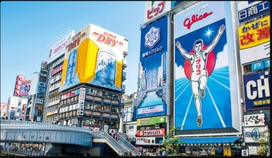
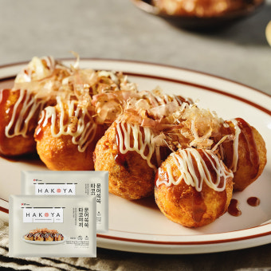

일본은 가까우면서도 매번 갈 때마다 전혀 다른 매력을 보여주는 나라입니다. 이번 7일 일정은 도쿄, 교토, 오사카를 중심으로 구성했으며, 각 도시마다 분위기와 감성이 완전히 달랐습니다.
짧지 않은 시간이었지만 돌아오는 길엔 아쉬움이 클 정도로, 일본은 정갈하고 깊이 있는 여행지였습니다.
1. 도쿄 – 세계 도시의 다채로운 얼굴
도쿄는 일본의 수도이자 세계에서 가장 바쁜 도시 중 하나입니다. 하지만 그 안에서도 질서, 청결, 감성이 살아 숨 쉬는 도시라는 점이 인상적이었습니다.
첫날 아침은 아사쿠사(浅草)에서 시작했습니다. 센소지(浅草寺)로 향하는 나카미세 거리에는 일본 전통 간식과 기념품이 즐비해, 천천히 걸으며 일본식 분위기를 느끼기 좋았습니다. 센소지 본당 앞에서는 향을 피우며 소원을 비는 사람들이 줄을 서 있었고, 저도 작은 염원을 담아 두 손을 모았습니다.
이후에는 스카이트리 전망대에 올라 도쿄 시내 전경을 한눈에 내려다보며 일본의 도시 구조를 실감했습니다. 밤이 되자 시부야 스크램블 교차로의 화려한 네온과 사람들의 움직임이 마치 영화 속 한 장면처럼 다가왔습니다.
도쿄에서의 마지막 밤은 이자카야에서 보냈습니다. 현지인들과 섞여 일본식 생맥주와 야키토리를 맛보며 하루의 피로를 풀었고, 짧지만 깊이 있는 첫날을 마무리할 수 있었습니다.

2. 교토 – 시간의 결이 머문 전통 도시
신칸센을 타고 도쿄에서 2시간 반. 교토는 마치 시간 여행을 떠나는 듯한 도시였습니다.
도착하자마자 느낀 건 조용한 분위기, 그리고 자연과 전통이 어우러진 도시라는 점이었습니다.
가장 먼저 찾은 곳은 기요미즈데라(清水寺). 언덕을 따라 올라가면 탁 트인 전망과 함께 붉은 단풍 혹은 벚꽃이 어우러져, 계절마다 전혀 다른 얼굴을 보여줍니다. 기요미즈데라를 둘러본 후에는 산넨자카–니넨자카 거리로 이어지는 골목을 걸었는데, 옛 일본 가옥이 이어진 이곳은 걷는 것만으로도 감성이 가득했습니다.
이튿날은 아라시야마 대나무 숲과 금각사(킨카쿠지)를 방문했습니다. 대나무숲에서는 바람에 흔들리는 잎소리와 햇살이 만들어내는 분위기가 정말 특별했고, 금으로 덮인 사원 건물이 연못에 비치는 모습은 숨이 멎을 만큼 아름다웠습니다.
교토는 단순히 유적지 투어가 아닌, 일본인의 정신과 미학을 느낄 수 있는 도시였습니다. 
3. 오사카 – 활기와 유쾌함의 도시
교토에서 기차로 30분 거리인 오사카는 분위기가 완전히 달랐습니다.
보다 자유롭고, 활기차며, 거리에는 웃음이 넘쳤습니다. 이 도시를 한마디로 표현한다면 ‘유쾌한 에너지’가 어울릴 것입니다.
가장 먼저 찾은 곳은 도톤보리 거리. 강을 따라 이어진 상점과 화려한 간판들, 그 중에서도 글리코맨 간판은 인증샷 필수 장소였습니다. 길거리에는 타코야키, 오코노미야키, 쿠시카츠 등 먹거리 천국이 펼쳐져 있었고, 음식 하나하나에 정성이 담겨 있었습니다.
다음으로 방문한 오사카성(大阪城)은 역사적 의미와 함께 공원으로도 훌륭했습니다. 봄엔 벚꽃이 만발하고, 가을엔 단풍이 성벽과 어우러져 더욱 아름다운 풍경을 자아냅니다.
마지막 날 밤엔 우메다 공중정원 전망대에 올라 오사카의 야경을 바라봤습니다. 높은 건물과 반짝이는 도시의 불빛, 그리고 떠날 시간이 다가온다는 아쉬움이 교차했습니다. 
4. 일본의 미식 경험 – 기본에 충실한 깊은 맛
일본 음식은 ‘정갈함’과 ‘섬세함’의 결정체입니다. 각 도시마다 대표 음식이 있고, 한 끼 식사조차 예술처럼 느껴졌습니다.
도쿄에서는 초밥을 먹지 않을 수 없었습니다. 츠키지 시장 근처 스시야에서 맛본 참치 초밥은 신선함 그 자체였고, 장인의 손끝에서 탄생하는 요리는 단순한 식사를 넘어서 하나의 퍼포먼스였습니다.
교토에서는 정식요리(가이세키)를 경험했습니다. 계절 식재료를 중심으로 정갈하게 담긴 한 접시 한 접시가 일본의 자연과 계절을 그대로 담고 있었고, 모든 감각을 만족시키는 식사였습니다.
오사카에서는 타코야키와 오코노미야키 같은 대중적인 길거리 음식이 정말 인상 깊었습니다. 특히 직접 구워주는 모습을 보는 재미도 있고, 한국인 입맛에도 잘 맞아 부담 없이 즐길 수 있었습니다.
여기에 빠질 수 없는 편의점 음식도 훌륭합니다. 간편하지만 퀄리티 높은 도시락, 삼각김밥, 디저트까지. 일본의 식문화는 일상 속에서 완성된 미학이라는 걸 새삼 느끼게 해줬습니다.
5. 실용 정보 – 일본 여행을 더 풍성하게 하는 팁
- 교통: 신칸센을 이용할 경우, JR 패스를 미리 구매하면 상당히 절약됩니다. 도시 내에서는 SUICA나 ICOCA 카드를 이용하면 편리합니다.
- 숙소: 도쿄와 오사카는 도심 접근성이 좋은 곳으로, 교토는 전통 료칸에서 1박 해보는 것도 추천합니다.
- 언어: 영어는 기본적인 안내에는 문제 없지만, 간단한 일본어 인사(“こんにちは”, “ありがとう”)를 알면 현지인들과의 거리감이 줄어듭니다.
- 현금 사용: 여전히 많은 곳에서 현금(엔화)이 사용되므로, 일부는 소지하는 것이 좋습니다.
- 문화 예절: 일본은 정숙함과 예절을 중요하게 여기는 문화입니다. 줄 서기, 조용한 대화, 쓰레기 분리수거 등 기본적인 매너를 지키면 더욱 즐거운 여행이 됩니다.
6. 마무리하며 – 일본, 다시 가고 싶은 나라
여행을 마치고 돌아오는 길, 일본은 단순한 관광지가 아니라 감성이 살아 있는 나라라는 생각이 들었습니다.
도시의 세련됨, 전통의 깊이, 사람들의 배려심, 음식의 정성까지. 여행을 통해 ‘일상으로 돌아가기 싫다’는 말이 진심이 된 적은 처음이었습니다.
다음 여행에서는 홋카이도나 규슈, 시코쿠 같은 지역도 경험해보고 싶습니다. 일본은 한 번으로는 다 담을 수 없는 나라, 다시 떠날 수밖에 없는 그런 매력을 가지고 있습니다.